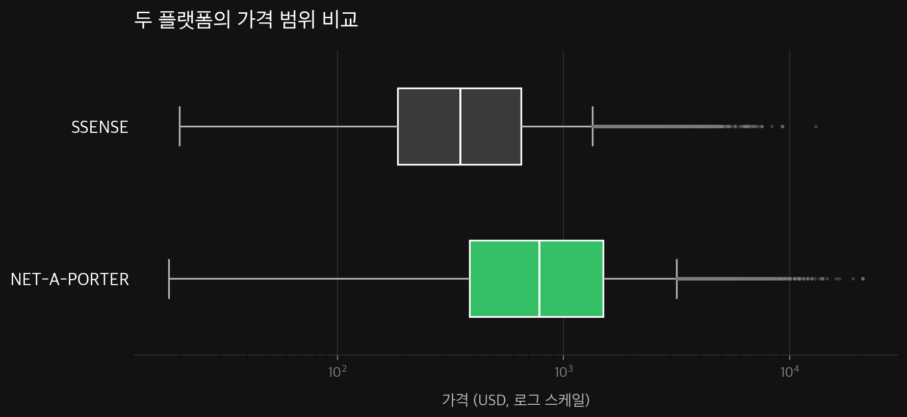

데이터리터러시 · 중간과제
SSENSE와 Net-a-Porter로 본 브랜드 포지셔닝
황수아 · 부산대학교 의류학과 3학년
주제 선정 배경
가격표는 소비자를 향한 숫자가 아니라, 브랜드가 자신을 설명하는 언어다.
연구 질문
브랜드별 가격대는 어떻게 나뉘나?
가격 분포브랜드마다 어떤 품목에 집중하나?
구성 전략같은 브랜드도 플랫폼에 따라 가격대와 구성이 다른가?
플랫폼 비교데이터
⚠ 두 데이터셋의 type 컬럼은 의미가 다르다 — SSENSE는 성별 구분, Net-a-Porter는 상품 카테고리 구분. 단순 병합 전 반드시 구분해서 다뤄야 한다.
분석 지표
브랜드가 각 플랫폼에서 얼마나 다양하게 전개하는지 보여주는 규모 지표
초고가 한정판 같은 이상치에 흔들리지 않는, 브랜드의 대표 가격대
브랜드가 커버하는 가격의 폭 — 포지셔닝이 좁은지 넓은지 보는 지표
의류·신발·가방·액세서리 중 무엇에 힘을 싣는지 보여주는 구성 전략 지표

분석 방법
대소문자·공백 차이를 정규화하고, 플랫폼 구분용 source 컬럼을 붙여 두 데이터를 합친다
브랜드 단위로 상품 수, 가격 중앙값·범위, 품목 비중을 계산한다
중앙값 기준 구간을 나눠 브랜드를 가격 티어(entry/mid/high)로 분류한다
막대그래프로 브랜드별 중앙값을, 박스플롯으로 가격 분포·이상치를 확인한다
데이터 미리보기
두 플랫폼에 공통으로 있는 브랜드 중 상품 수가 가장 많은 10개 브랜드의 가격 중앙값(USD) 비교. 본 분석에서 다룰 "같은 브랜드, 플랫폼별 차이"를 미리 보여주는 샘플이며, 전체 가격 티어 분류는 기말까지 진행할 계획이다.
한계와 다음 단계